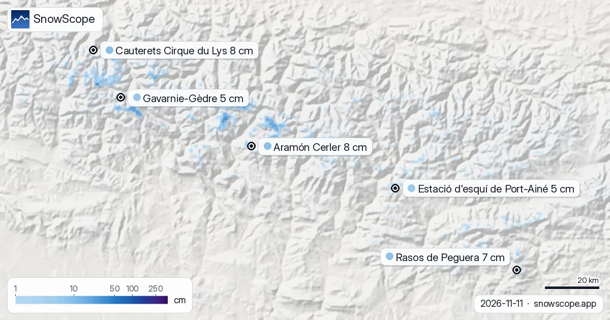

Ski gear for Aramón Cerler today: ready for thin early-season snow (Pyrenees, 11 November)
From our snow model and forecast, today in the Pyrenees brings thin early-season snow and warm air that can leave a crust. Below, resort by resort: what to pack, what to wear, when to ski. Snow in the mountains is water held back for spring: what falls now feeds rivers and reservoirs later.
See the live snow forecast for Aramón Cerler in the SnowScope appSnow depth, powder alerts and the 3D map, free.
Today's snow and weather
Thin early-season snow (upper slopes under 30 cm): Aramón Cerler (8 cm), Cauterets Cirque du Lys (8 cm) and Rasos de Peguera (7 cm).
Warm air that can leave a crust (snow line above the top on a warm day without much new snow): Aramón Cerler, Rasos de Peguera and Estació d'esquí de Port-Ainé.
| Resort | Snow depth | New snow, 72 h | Coming, next days | Top |
|---|---|---|---|---|
| Aramón Cerler | 8 cm | 3 cm | 6 cm | 2,618 m |
| Cauterets Cirque du Lys | 8 cm | 1 cm | 18 cm | 2,420 m |
| Rasos de Peguera | 7 cm | 0 cm | 0 cm | 2,036 m |
| Estació d'esquí de Port-Ainé | 5 cm | 0 cm | 1 cm | 2,424 m |
| Gavarnie-Gèdre | 5 cm | 0 cm | 11 cm | 2,283 m |

The snowpack at each resort
Aramón Cerler (top 2,618 m) holds about 8 cm on its upper slopes, gained 3 cm in 72 hours and should get 6 cm in the next days, and the 0 °C level moves between 2,490 m and 3,270 m.
Cauterets Cirque du Lys (top 2,420 m): about 8 cm stored up high, 1 cm added in 72 hours, 18 cm forecast for the next days, and the 0 °C level moves between 2,330 m and 3,160 m.
Rasos de Peguera (top 2,036 m) holds about 7 cm on its upper slopes, gained 0 cm in 72 hours and should get 0 cm in the next days, and the 0 °C level moves between 2,530 m and 3,480 m.
Estació d'esquí de Port-Ainé (top 2,424 m): about 5 cm stored up high, 0 cm added in 72 hours, 1 cm forecast for the next days, and the 0 °C level moves between 2,480 m and 3,340 m.
Gavarnie-Gèdre (top 2,283 m) holds about 5 cm on its upper slopes, gained 0 cm in 72 hours and should get 11 cm in the next days, and the 0 °C level moves between 2,330 m and 3,130 m.
Clothes and gear for this snow
A thin snowpack does not cover the ground well: take older or rented skis, keep the edges sharp for hard pistes, and stay on groomed runs, where stones are less likely.
Wet snow that freezes again turns into crust, so pack a waterproof shell and stick to sharp edges, a helmet and groomed runs.
Timing and slopes
The highest, north-facing runs get the least sun and keep the best snow.
The highest slopes stay coldest and keep the snow driest.
Off-piste safety kit
Off the groomed runs, carry an avalanche transceiver, a shovel and a probe, know how to use them, and never go alone. Read the official avalanche bulletin first.
Tips for skiers
- Snow changes from day to day, and local shops tune edges for it: rent or service your skis there if yours are not ready.
- Snow on the map does not mean a resort is open: check lifts and dates on the resort's website.
- Before any off-piste or touring day, read the official avalanche bulletin (links below).
- The 0 °C level is a forecast with an error of several hundred metres: check the map again the day before you go.
About these numbers
Resort snow depths are the deepest snow on the resort's upper slopes from the SnowScope snow model (about 1 km, run of 11 November); they are estimates for an area, not a measurement at one point. Station values are measurements on the date shown. Forecasts can change. Always read the official avalanche bulletin before going off-piste.
Official avalanche bulletins: Météo-France / Meteocat / AEMET
Cite this report
For research, teaching or the press: the numbers and charts are free to reuse under CC BY 4.0 with this citation.
SnowScope (2026), Ski gear for Aramón Cerler today: ready for thin early-season snow (Pyrenees, 11 November), https://snowscope.app/blog/en/2026/11/pyrenees-what-to-bring-ski-gear-conditions-11-november-2026.html, accessed 2026-11-11
SnowScope (Atlas Labs). (2026, November 11). Ski gear for Aramón Cerler today: ready for thin early-season snow (Pyrenees, 11 November). SnowScope snow reports. https://snowscope.app/blog/en/2026/11/pyrenees-what-to-bring-ski-gear-conditions-11-november-2026.html
BibTeX
@misc{snowscope2026pyreneeswhattobringskige,
author = {{SnowScope (Atlas Labs)}},
title = {Ski gear for Aramón Cerler today: ready for thin early-season snow (Pyrenees, 11 November)},
year = {2026},
month = nov,
howpublished = {\url{https://snowscope.app/blog/en/2026/11/pyrenees-what-to-bring-ski-gear-conditions-11-november-2026.html}},
note = {Published 2026-11-11 18:44 UTC; accessed 2026-11-11}
}· CC BY 4.0 · Methods, data and tools →
Aramón Cerler: snow and temperature by height, this winter vs last (tools) →
Follow Aramón Cerler
Free: a message when fresh snow is coming, and the forecast every morning.
More snow reports

We combined today's snow depth, the new snow of the last 72 hours and the forecast to pick Rasos de Peguera, Aramón Cerler and Masella. Of these …

Rasos de Peguera got 17 cm of new snow in the last 72 hours, 17 cm of it in the last 24 hours. It now has about 13 cm on its upper slopes, according …

Gourette and Cauterets side by side: heights, usual snow by month, the best weeks and how to get there, from 46 past winters.